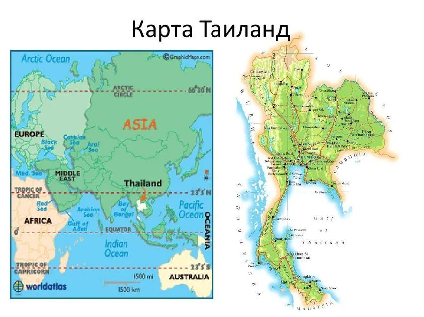
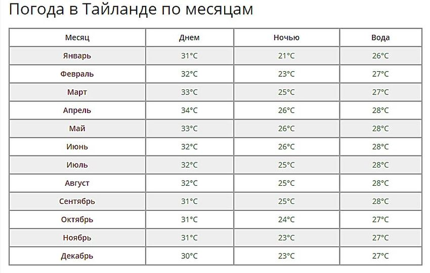
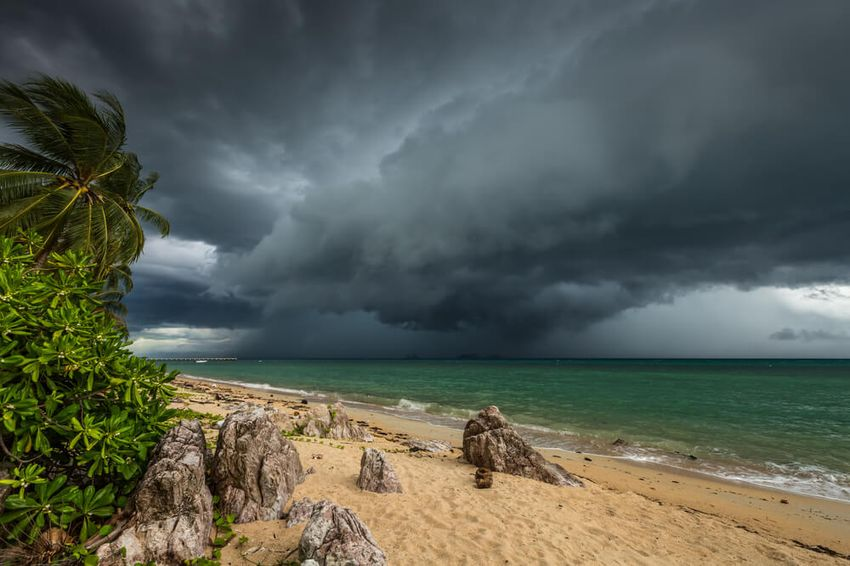

Тай = Рай!
Таиланд - страна, очень любимая туристами за свой изумительный климат, массу достопримечательностей, потрясающие шоу и вкусную еду. Тут есть великолепные пляжи на островах и огненные дискотеки, древние величественные храмы и красивый подводный мир. Не зря говорят, что Тай = Рай!
Прогуливаясь по улочкам городов Тая, вы обязательно увидите сияющие дружелюбными улыбками лица тайцев и запомните их неподдельную приветливость. Эта страна многогранна - тут есть и шумные уличные рынки, и сказочные старые города, и современные фешенебельные отели. Давайте познакомимся со страной поближе.
География Таиланда
Таиланд находится в Юго-Восточной Азии. Это страна гор, джунглей и равнин. Площадь равняется 513 115 кв.км. Если посмотреть на карту, то видно, что форма страны похожа на голову слона. Там, где должны быть глаза, находится Бангкок, а хобот - полоса юга, где и расположились наиболее популярные курорты.
Таиланд омывается двумя морями. С востока это воды Сиамского залива от Южно-Китайского моря, а с запада находится Андаманское море. Граничит Таиланд с одной стороны с Камбоджей и Лаосом, затем с другой стороны - с Мьянмой, и на юге проходит граница с Малайзией.
Официальное название страны звучит так - Королевство Таиланд.
Население, по данным ООН, составляет более 67,8 млн человек.
Столица Таиланда - город Бангкок.
Основной язык тут тайский, но и на английском вас поймут. Основная религия - буддизм.
Климат Таиланда
Жарко ли в Таиланде? Когда сюда ехать? Есть ли сезон дождей в Таиланде?
Вообще тут есть два основных типа в стране: это муссонный и тропический климат саванны.
Например, климат центральной части королевства такой: тут три сезона, а не четыре, как мы привыкли. Первый - жаркий, который длится с марта по май. В это время температура достигает +42 °C. Далее идет дождливый сезон с июня по октябрь, когда температура стоит на отметке +26...+32 °C. Финал и начало года - прохладный сезон, который идет с ноября по февраль. В этот период температура составляет +18...+32 °C.
Это, что касается центра. На севере Таиланда в зимние месяцы довольно прохладно, а ночью даже может быть и холодно. А вот на юге с марта по ноябрь очень влажно, так что учтите, что туда ехать лучше с февраля по март.
Сезон дождей в Таиланде - когда он? На самом деле единого периода сезона дождей в этой стране просто нет. Муссон идет поэтапно. Например, в августе заливает Пхукет, в ноябре уже льет в Самуи. Но даже если вы попали именно в период муссонов на вашем курорте, то бояться за испорченный отдых не стоит. Это ведь тропические ливни! Они тут длятся до получаса в день, а все остальное время будет яркое солнце.
Если вы хотите увидеть Таиланд в бархатный сезон, то посетите страну в период с ноября по февраль. В это время на большей части государства погода стоит сухая. Но при этом она не такая жаркая, как весной и летом. А вот на север королевства не стоит ехать в августе или сентябре. Ведь именно в это время тут идут сильные проливные дожди и ветер, которые испортят вам все впечатление.
